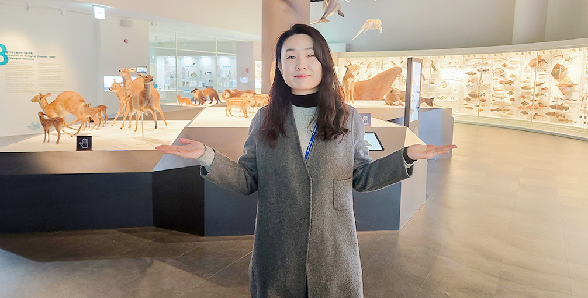
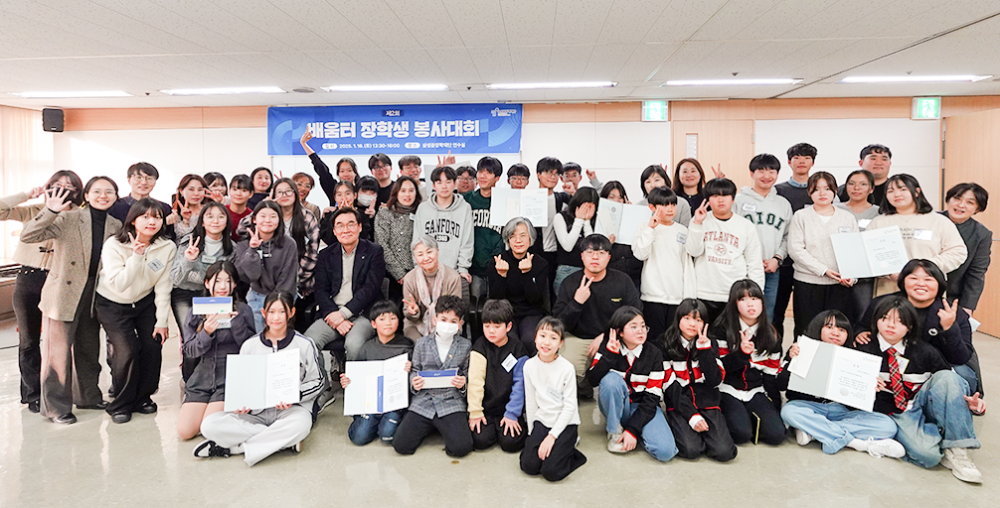

더불어 성장하는 배움공동체
사람이 있을 곳을 지원하고
사람을 통해 사람을 키웁니다
장학사업
별을 위한
희망 지원사업
-
멘토링
꿈장학사업청소년들을 멘토와 함께 선발하여 멘토 선생님의 교육적, 정서적 지지를 받으면서 성장할 수 있도록 지원하는 사업
자세히보기 -
리더육성
장학사업재단 출신 꿈장학생 중, 학업역량 및 의지가 우수한 학생을 선발하여 사회 각 분야에서 리더로 성장할 수 있도록 맞춤 지원하는 사업
자세히보기 -
배움터
교육지원사업지역적·사회경제적 이유로 교육지원이 필요한 아동·청소년을 위하여 교육복지 안전망을 구축할 수 있도록 지원하는 사업
자세히보기 -
글로벌
장학사업불가피하게 흩어진 한인후손과 개발도상국 현지 아동·청소년, 개발도상국 출신 대학(원)생을 지원하여 글로벌 리더로 양성하는 사업
자세히보기 -
방과후학교 대상
매년 1월, 교육부가 주최하여 우수한 방과후학교 프로그램을 운영하는 학교, 교사, 비영리단체를 시상
자세히보기 -
청소년
치아교정지원사업재단 꿈장학생 중 적절한 치료를 받지 못한 청소년에게 후원으로 무료 치아교정의 기회를 제공하는 사업
자세히보기
WEBZINE
별의
약속을 지키다
-
 리더육성 장학사업
리더육성 장학사업더 큰 발걸음을 내딛기 위해 새로운 출발선 앞에 서다
졸업과 함께 인생의 새로운 장을 맞이하게 된 졸업생들의 얼굴에는 정든 재단을 떠나는 아쉬움과 새로운 출발에 대한 설렘이 교차했다.
MARCH 2025 -
 리더육성 장학사업
리더육성 장학사업우리의 무한한 가능성을 믿어!
꿈장학생 때부터 간직해 온 목표에 한 발짝 더 다가가게 된 신입 대학 희망장학생들이 한자리에 모였다. 많은 이들의 격려와 응원을 받으며, 훗날
MARCH 2025 -
 리더육성 장학사업
리더육성 장학사업언어 장벽을 넘어 희망을 함께 나눈 특별한 순간
더 넓은 세상에서 나눔의 가치를 배우고 실현하고자 대학희망 장학생들이 한국이 가장 추운 시기에 겨울마저도 더운 나라인 캄보디아로 해외 봉사 활동을 떠났다.
MARCH 2025 -
리더육성 장학사업
미래 세대를 위해 생물다양성을 지켜내는 연구원
2022년 겨울, 캐나다 몬트리올 거리에는 ‘제15차 생물다양성협약 당사국총회(COP15)’를 알리는 현수막이 나붙었다. 캐나다 콩코디아 대학교에서 박사후 연구원으로 일하던 원하리 장학생은
MARCH 2025 -
배움터 교육지원산업
친구들과 배우며 익히는 봉사활동의 의미
배움터에서 배운 것으로 봉사활동을 할 수 있을까? 여기 한글, 아카펠라, 축구, 악기 연주, 춤, 손바느질 등을 활용해 저마다 창의적인 나눔활동을 진행한 배움터 장학생들이 한자리에 모였다.
MARCH 2025